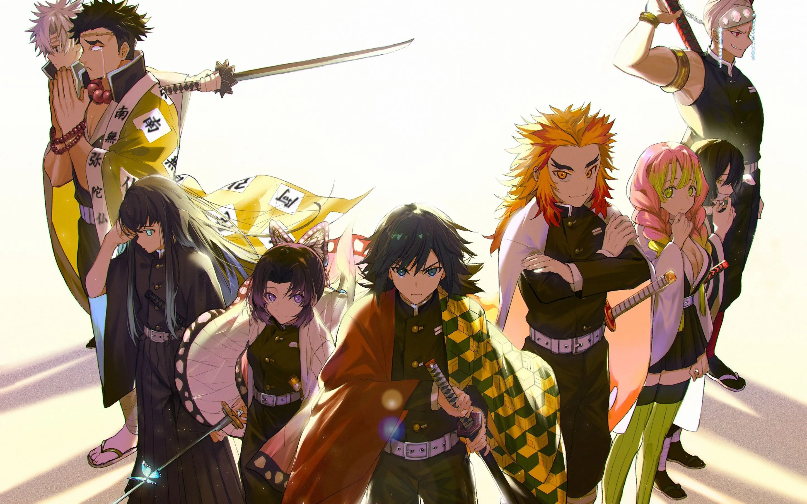
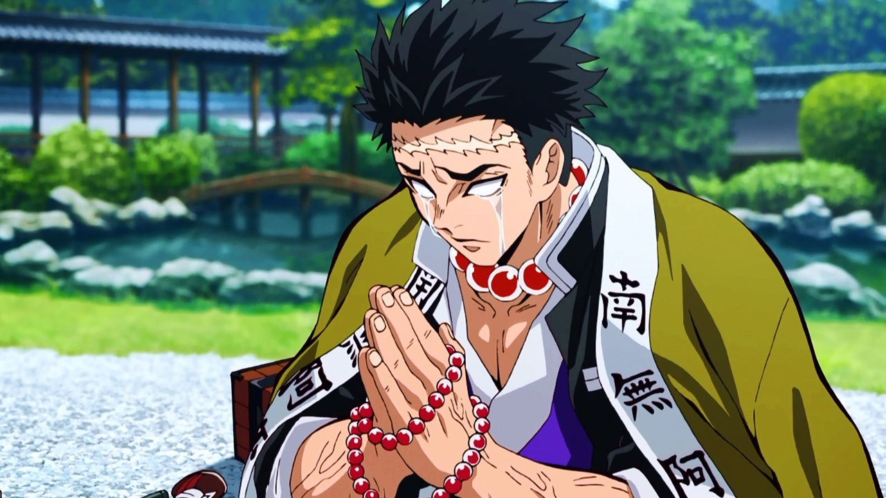
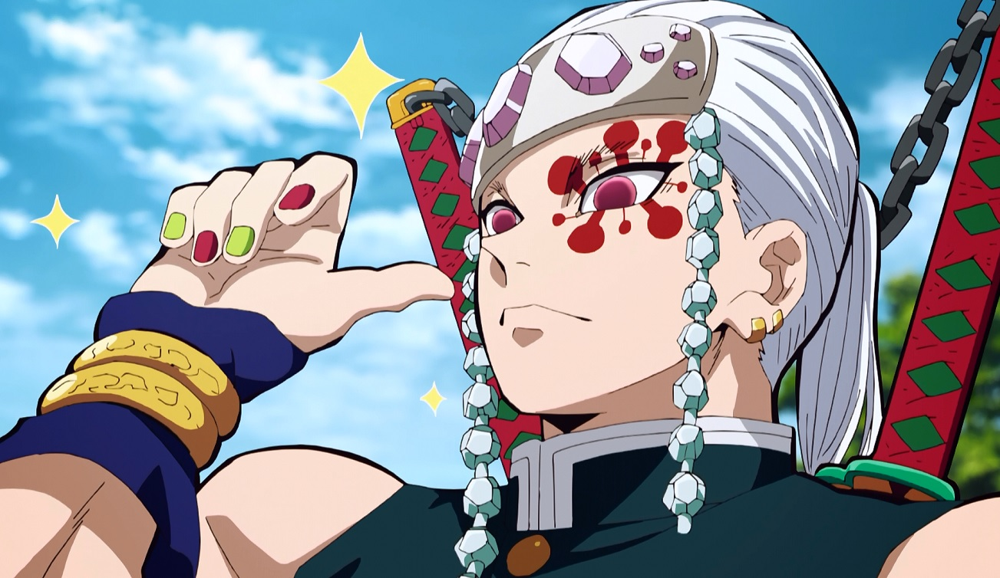
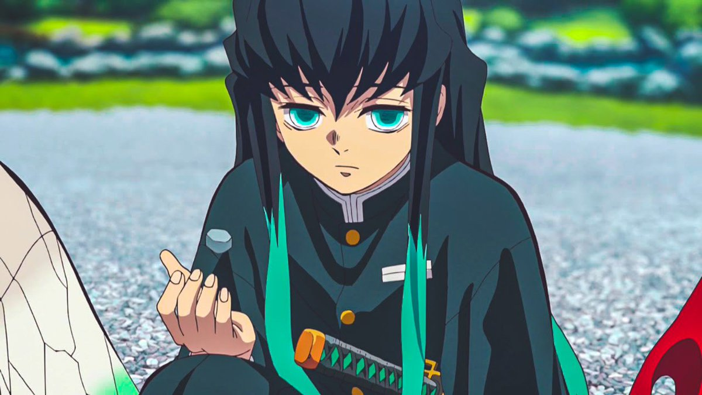

Kimetsu no Yaiba: Personagens
Sakonji Urokodaki:
Sakonji Urokodaki, ou em japonês (鱗滝 左近次), é o mentor de diversos personagens mais importantes para a história de Kimetsu no Yaiba, sendo mestre não apenas de nosso protagonista, Kamado Tanjiro, mas também de Sabito, Giyuu Tomioka e também o possível progenitor da tão famigerada Respiração da Água, compartilhando e dando continuidade a ela através de seus pupilos.
Nezuko Kamado:
Nezuko Kamado (竈門かまど 禰ね豆ず子こ Kamado Nezuko?) é a deuteragonista de Demon Slayer: Kimetsu no Yaiba.
Ela é um Oni, irmã mais nova de Tanjiro Kamado e um dos dois membros restantes da família Kamado. Inicialmente sendo um ser humano, ela foi atacada e transformada em Oni por Muzan Kibutsuji.Nezuko antes de sua tranformação em Oni:

Zenitsu Agatsuma:

Zenitsu Agatsuma (我妻善逸 Agatsuma Zennitsu?)
Voz original: Hiro Shimono
Dublado por: Adrian Tatini (Brasil);[6]
Zenitsu é um garoto covarde e medroso que se juntou ao Ki-satsutai na mesma época que Tanjirō.
Ele treinou e se especializou no estilo de batalha "Respiração do Trovão" (雷の呼吸法 Kaminari no Kokyū-hō?) através do seu avô, um hashira do trovão veterano; contudo, Zenitsu só foi capaz de aprender a primeira técnica (a Respiração do Trovão possui 6 técnicas) e, por causa disso, muitas vezes ele menospreza a si mesmo, apesar do fato de que ele é talentoso, pois sempre procurou aperfeiçoar ao máximo a primeira técnica.Zenitsu possui também uma excelente audição.
Inosuke Hashibira:
Voz original: Yoshitsugu Matsuoka
Dublado por: Dláigelles Silva (Brasil);[6]
Um jovem garoto que foi criado por um javali selvagem, Inosuke utiliza um estilo autodidata chamado "Respiração das Feras" (獣の呼吸法 Kemono no Kokyū-hō?), juntamente com duas espadas serrilhadas em batalha.
Quando ele recebe novas espadas, ele propositadamente as tornam serrilhadas, a fim de combinar com sua preferência e estilo de luta. Ele é impetuoso e propenso a reagir violentamente e, embora pareça sombrio, provou-se um caçador hábil em batalhas repetidas vezes.
Ele é extremamente musculoso e robusto, o que contrasta com o seu rosto estranhamente afeminado, que ele normalmente esconde sob a cabeça de um javali empalhado. Quando ele conhece Tanjirō, ele o trata como um inimigo por sua determinação em proteger Nezuko, um demônio; todavia, os dois rapidamente se tornam amigos e passam a batalharem juntos. Ele costuma desafiar Tanjirō para competições aceitas de bom humor. Ele fez o teste de admissão para o Ki-satsutai ao mesmo tempo que Tanjirō e Zenitsu e aparentemente foi o primeiro a concluí-lo.
Suas katanas são cinza-violeta e ele utiliza seu apurado senso de tato para detectar inimigos à longas distâncias.Genya Shinazugawa:
Voz original: Nobuhiko Okamoto
Dublado por: Rodrigo Andreatto (Brasil);[6]
Genya é um garoto que participou do teste de aceitação para o Ki-satsutai junto com Tanjirō, Zenitsu, Inosuke e Kanao mostrando uma personalidade impaciente e grosseira.
Vindo de uma família conturbada, Genya vivia com seus 6 irmãos, uma mãe que se esforçava muito pelo melhor da família e um pai violento, seu pai acabou morrendo pelos moradores de onde eles viviam e ele e seu irmão Sanemi tomam a responsabilidade de cuidar da família.
Em um certo dia a mãe de Genya desaparece e seu irmão Sanemi resolve sair para procurá-la, enquanto Genya permanecia com seus irmãos em casa, algum tempo depois uma batida na porta é ouvida e um dos irmãos vai abri-la e assim que a porta é aberta a criança é cortada e todos ficam feridos pela criatura.
Sanemi aparece para salvar Genya e derrota a criatura que era sua mãe, com esse choque Genya chama seu irmão de assassino e anos depois ele se junta ao Ki-satsutai para reatar a conexão com seu irmão.Kanao Tsuyuri:
Voz original: Reina Ueda
Dublado por: Michelle Giudice (Brasil);[6]
Kanao é uma garota que realizou o teste de admissão para o Ki-satsutai junto com Tanjirō, Inosuke, Zenitsu e Genya.
Oriunda de uma família que vivia em situação de miséria, Kanao sofria agressões físicas de seu próprio pai, que a vende como escrava para um desconhecido. Após ser resgatada por Shinobu e Kanae, Kanao se torna uma "tsuguko" (次ぐ子? lit. "filho sucessor" ou "semente sucessora") da hashira do inseto, Shinobu, que a treina para sucedê-la.
Em batalha, Kanao é uma espadachim altamente habilidosa e ágil, possuindo também um grande senso de visão.
Ela ainda possui dificuldade em realizar ações sem ser informada diretamente sobre o que fazer, motivo pelo qual Kanae lhe deu uma moeda, para ela realizar "cara ou coroa" sempre que for incapaz de tomar decisões. Após conhecer Tanjirō, este a incentiva a tomar decisões por ela mesma e a utilizar a moeda com menos frequência. Kanao utiliza uma katana solar de cor rosa.
Tanjiro Kamado:
Voz original: Natsuki Hanae (enquanto adolescente), Satomi Satō (enquanto criança) Dublado por: Daniel Figueira (Brasil);
Tanjirō é o filho mais velho de um vendedor de carvão. Sua família inteira foi massacrada por um demônio enquanto ele vendia carvão numa cidade, com apenas sua irmã Nezuko sobrevivendo, porém se transformando em oni.
Seu objetivo é encontrar uma cura para ela e transformá-la de volta em um humana, e é para esse fim que ele decide se juntar à Ki-satsutai (鬼殺隊? lit. "Organização dos Aniquiladores de Demônios").
Organização Exterminadora de Oni
O Esquadrão de Exterminadores de Demônios é uma organização existente desde os tempos mais antigos com o intuito de proteger a raça humana dos demônios ou onis em sua denominação original.
Não há um número exato de quantos exterminadores ou matadores de demônios integram a organização no entanto muitos deles encontram-se espalhados por todo o Japão. A organização não é reconhecida pelo governo , mas isto nunca os impossibilitou de cumprirem sua função de caçar demônios e principalmente o objetivo de eliminar Muzan Kibutsuji.
Hashiras - Pilares
Gyuu Tomioka - Pilar da água
Tomioka (冨とみ岡おか 義ぎ勇ゆう Tomioka Gyuū?), é um dos principais personagens suportes de Kimetsu no Yaiba. Ele é um Caçador de Onis do Esquadrão de Caçadores de Onis e o atual pilar da água.
Gyuu apareceu inicialmente na história no momento em que Tanjiro estava correndo com Nezuko nas costas enquanto segue o rastro do cheiro de Muzan Kibutsuji, Oni responsavel por matar sua família.
Seguindo sua intuição, Gyuu tenta assassinar Nezuko, ja transformada em Oni, iniciando um combate com Tanjiro, que estava tentando proteger sua irmã. Após esse combate, devastado, Tanjiro cai inconsciente e Nezuko acorda protegendo seu irmão de Gyuu, o que o impressiona e o faz permitir que Nezuko continue viva.
Gyuu consola a Tanjiro, e o encoraja a partir em sua busca pela cura de Nezuko.
Shinobu Kocho - Pilar do inseto
Shinobu, além de ser uma exímia espadachim, tem experiência médica que ela leva ao combate. Apesar de não ter a mesma força física de seus companheiros, ela é igualmente letal, utilizando uma lâmina mais fina coberta por um veneno mortífero.
Ela utiliza a agilidade superior para alvejar os oponentes com múltiplos golpes venenosos e, por fim, os matando como um Pilar do Inseto deveria.Kyojuro Rengoku - Pilar das chamas

Rengoku utiliza a técnica da respiração das chamas (diferente da respiração especial de Tanjiro), que consiste em poderosos golpes feitos para incapacitar os oponentes.
O entusiasmado rapaz é protagonista do filme Mugen Train e principal aliado de Tanjiro nesse arco sequencial da primeira temporada. Quem assistiu garante: a história do Hashira é de emocionar, afinal, nem tudo são flores no mundo de Demon Slayer.Mitsuri Kanroji - Hashira do amor

Caracterizada pelos cabelos rosados com pontas verdes e uma personalidade apaixonada, Mitsuri é uma pessoa tímida. Em combate, ela usa a técnica de respiração do amor, que dispara chicotadas.
Misturando agilidade, força e uma espada inusitada capaz de se estender e se retrair, a Hashira apresenta versatilidade e pode surpreender. Ao lado do Hashira da Névoa, Mitsuri será parte fundamental da trama da recém-confirmada terceira temporada.Obanai Iguro - Hashira das Serpentes
O jovem Obanai é um excelente espadachim que, apesar de ser parcialmente cego do olho direito, não deixa os oponentes escaparem. Ele utiliza uma espada assimétrica da categoria cris, que remete ao corpo esguio de uma cobra.
E serpente é justamente a técnica de respiração que ele utiliza, um derivado da respiração da água dominada por Giyu e Tanjiro. Os métodos de combate se destacam por movimentos que confundem e surpreendem o inimigo, sem dar a ele uma chance de fuga.Sanemi Shinazugawa - Hashira do Vento

De visual excêntrico e explosivo, Sanemi utiliza a respiração do Vento, o que faz com que ele aja como um furacão no campo de batalha. Em uma das formas da técnica, por exemplo, ele avança para cima do oponente girando como um ciclone.
A respiração de Sanemi é caracterizada pela incessante cadência de golpes e, ironicamente, pouco espaço de tempo para que o oponente respire.Gyomei Himejima - Hashira da Rocha
Gyomei se destacou entre os Hashiras por ser o maior do grupo e por aparecer chorando sem parar. Esse gigante gentil utiliza uma arma de correntes no melhor estilo kusarigama, a fim de compensar o fato de ser cego -- assim, ele consegue ouvir o som das correntes e utilizá-la mais efetivamente do que com uma espada.
O Hashira utiliza a respiração da rocha, que pode ser usada apenas em conjunto com armas da categoria que ele usa. A técnica é caracterizada por golpes pesados e uso do terreno para refletir e bloquear ataques. É conhecido como o Pilar mais forte do Esquadrão de Extermínio.Tengen Uzui - Hashira do Som
Tengen, notório pela tatuagem vermelha em torno do olho esquerdo, utiliza duas grandes espadas, maiores do que uma lâmina Nichirin comum, conectadas por uma corrente. A respiração do som transforma o combate do Hashira em uma dança rítmica após ele analisar os padrões de sons por meio dos movimentos do oponente.
Além disso, espere muito barulho, pois ele utiliza bombas para criar grandes explosões acompanhadas de estrondos sonoros. O Pilar é o grande destaque da segunda temporada do anime, que adaptou o arco do Distrito do Entretenimento. Extravagante, né?Muichiro Tokito - Hashira da Névoa
Muichiro é um introspectivo e distraído jovem espadachim. Ele, diferente de muitos dos Hashira mencionados acima, utiliza uma espada comum e alcançou o posto de Pilar da sociedade de extermínio em apenas dois meses de treinamento.
Abraçando a respiração da névoa, Muichiro foca em depravar os sentidos dos oponentes - como a névoa faz. Assim, os golpes dele consistem em ataques velozes que deixam os inimigos sem saberem de onde a ferida veio. Como mencionado anteriormente, ao lado da Hashira do Amor, Muichiro será parte fundamental da trama da recém-confirmada terceira temporada.Antagonistas:
Muzan Kibutsuji
“
Ser morto por mim é o mesmo que encontrar uma catástrofe. ”
— "Kibutsuji Muzan."
Muzan Kibutsuji (鬼き舞ぶ辻つじ 無む惨ざん Kibutsuji Muzan?) é o principal antagonista de Demon Slayer: Kimetsu no Yaiba, ele é o Rei dos Demônios o primeiro de sua raça sendo também o progenitor de todos os outros demônios existentes.
Há um milênio atrás, Muzan foi transformado em um demônio enquanto procurava a cura para uma doença terminal que o acometia, a partir de então o seu objetivo era viver a vida sem o medo da morte e ganhar a imortalidade. Outro objetivo pessoal era livrar-se de sua fraqueza a luz solar, que poderia ser resolvida de duas formas: a primeira seria encontrar uma planta chamada Lírio Aranha Azul e a segunda seria criar mais demônios na esperança que um deles alcançasse imunidade a luz solar.
Ele é o responsável pelo massacre da família Kamado e pela transformação de Nezuko em um demônio.
Daki e Gyutaro - Lua Superior 6
Gyutaro (妓夫太郎) é um demônio, sendo membro dos Doze Demônios da Lua, ele ocupa a posição de Lua Superior Seis, apesar de ser o verdadeiro dono da posição ele também a divide com sua irmã mais nova, Daki.
Akaza - Lua Superior 3
Akaza é um membro dos Doze Demônios da Lua, mantendo a posição da Lua Superior Três. Enquanto ele era humano, seu nome era Hakuji.
Nascido em uma família de baixa renda, com o pai doente, ele foi forçado a viver com furtos desde os doze anos de idade. Depois de ser pego e receber tatuagens para mostrar que ele é um ladrão, seu pai se matou para que ele não precisasse continuar roubando.
Depois de causar comoção em outra cidade, um artista marcial local chamado Keizou o venceu e o aceitou em seu dojo, vendo seu potencial. Akaza começou a ajudar com sua filha doentia Koyuki, e os dois se apaixonaram.
Um dia, depois de retornar de sua visita ao túmulo de seu pai, ele descobriu que Keizou e Koyuki morreram devido a um veneno jogado no poço por membros ciumentos do dojo na tentativa de assassiná-lo.
Cheio de dor, ele matou todos os membros do dojo e desenvolveu um ódio pelos fracos.
*Detalhe: Esses são os onis que aparecem no anime Kimetsu no Yaiba.*
Luas Superiores (Mangá)
Kaigaku - Lua superior 6
Amigo de infância de Zenitsu, Kaigaku é o oposto dele. Enquanto Zenitsu dominou apenas o primeiro estilo da respiração do raio, Kaigaku dominou os 11 subsequentes. Ele é derrotado por Zenitsu em uma luta razoavelmente fácil para o herói. Aliás, vale dizer que eles foram treinados pelo mesmo mestre.
Gyokko - Lua Superior 5
Gyokko é descrito como sendo de temperamento curto, superficial e arrogante, especialmente quando se trata de coisas relacionadas à sua “arte”, como visto quando ele se enfureceu facilmente com Muichiro quando ele começou a insultar e tirar sarro da qualidade de sua arte e através de sua conversa com o Hashira, constantemente se elogiava como “bonito” e seu trabalho ainda mais, reforçando ainda mais sua personalidade arrogante e narcisista.
Ele também se mostrou incrivelmente mesquinho e ciumento, como visto quando atacou e mutilou Hotaru Haganezuka devido ao ciúme do último foco e dedicação ao seu trabalho, superando seu próprio zelo ao trabalhar em sua própria arte.Hatengu - Lua Superior 4
A forma primária de Hantengu tem uma persona de covardia. Ele se assustava com o que acontecia ao seu redor, mostrando então traços de medo e ilusão. Ele foi de gritar de medo até mesmo nas coisas mais insignificantes. Isso é evidente no fato de que ele sempre escolhe engatinhar em vez de andar em linha reta.
Mesmo em combate, Hantengu é extremamente covarde, chorando quando foi cortado por Muichiro Tokito. Isso até mesmo quando estava se escondendo dos Demon Slayers.
Hantengu também parece acreditar que ele é completamente inocente, apesar das evidências óbvias que apontam para seus inúmeros crimes como humano. Mesmo como um demônio, matando e comendo dezenas de pessoas inocentes, ele ainda acreditava teimosamente e delirantemente que era inocente.
Doma/Douma - Lua Superior 2
A lua superior 2 não fica muito longe em termos de poder com relação ao 3, Akaza. Doma é um cara gentil, educado e aparentemente muito sensível. Quando criança ele foi uma espécie de príncipe, mas sempre foi muito sensível com as pessoas que sofriam perto dele
Após virar um demônio, Doma teve um jeito peculiar de fazer as pessoas pararem de sofrer que foi comendo-as. Assim elas fariam parte dele e viveriam para sempre (faz sentido?). Além disso, Doma enfrentou Shinobu, matando-a, e posteriormente foi derrotado por Kanao e Inosuke.Kokushibo - Lua Superior 1

Kokushibou já foi um espadachim que usava respirações, e continua as usando depois de ter virado um demônio. Ele usa a Respiração da Lua, luta com uma espada e usando suas técnicas de espadachim. Aliás, curiosamente, a Lua Superior 1 é irmão de Yoriichi Tsugikuni (que domina a Respiração do Sol), o misterioso espadachim de cabelos vermelhos e com brincos de hanafuda (como os de Tanjirou).
Kokushibou é derrotado em uma dura luto entre ele e os Hashira Muichiro, Sanemi e Gyomei (o mais poderoso Hashira), com a ajuda de Genya.
Muitas vezes, ele era muito reservado como um demônio, e com tão pouco conhecimento sobre os Ranks Superiores. Dessa forma, não se sabia muito sobre ele. Ele era um seguidor de regras inflexível, pontual, e mostrava muito respeito à hierarquia dos Doze Kizuki – como visto na reunião do Rank Superior.
Ele demonstrou um forte senso de lealdade para com Muzan Kibutsuji, com a maioria de suas ações sendo feitas com o único propósito de cumprir os objetivos de Muzan. Apesar de exibir reserva e humildade, ele também era bastante frio; suas palavras podem ser extremamente duras, especialmente ao repreender os indivíduos.